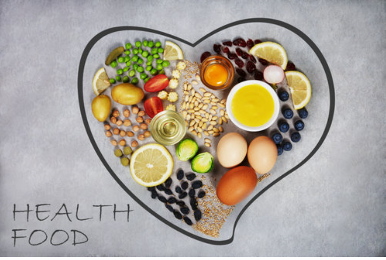
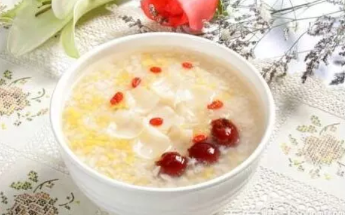
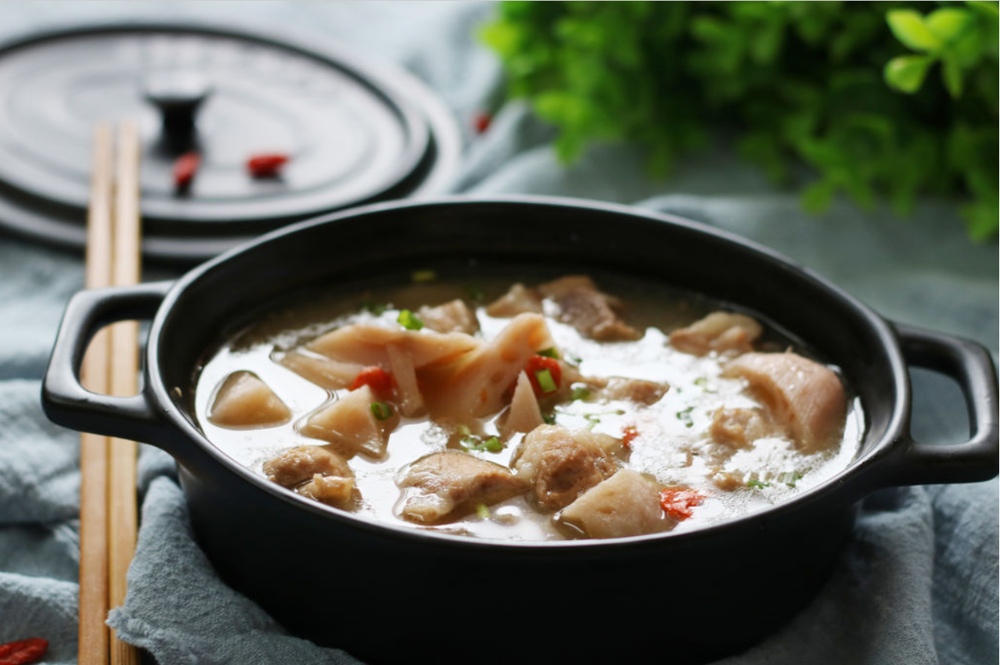
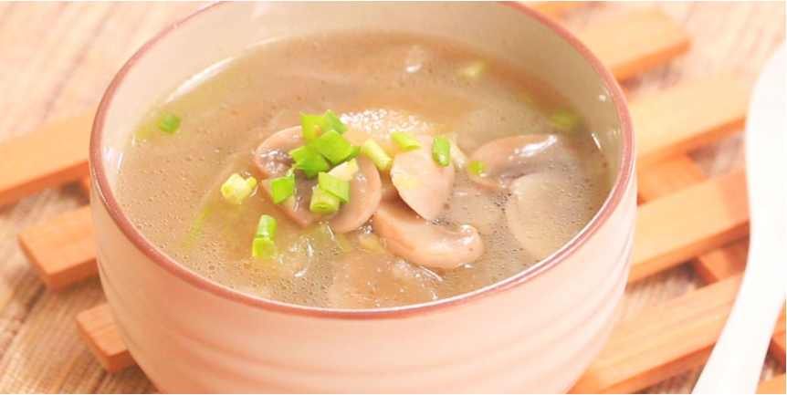
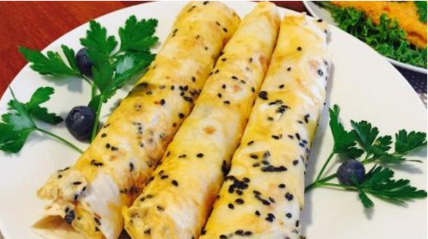
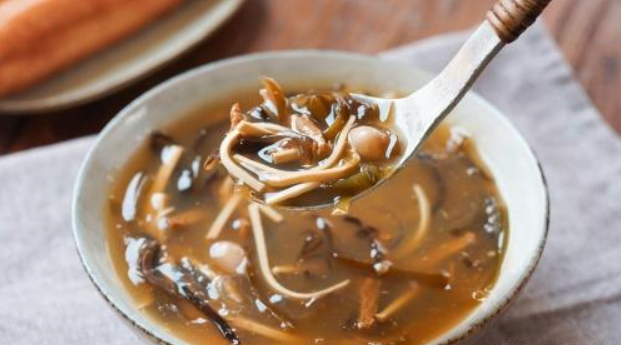
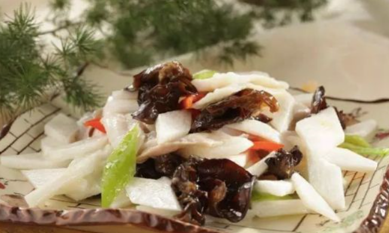
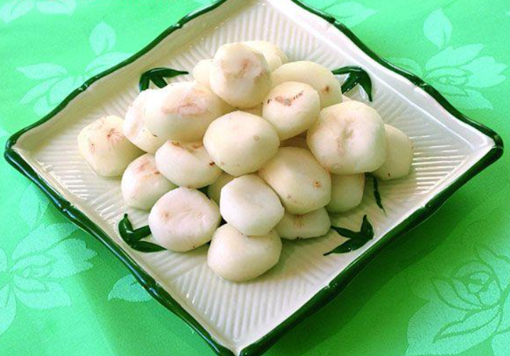
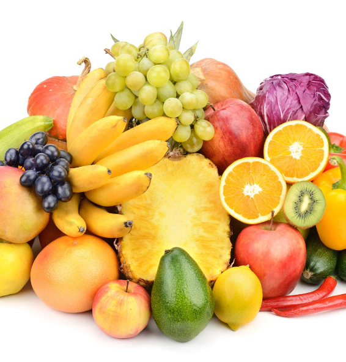

小米:是谷类营养之王主要有补血、安神、养肾的功效，小米熬粥具有“代参汤”之美称更是营养价值丰富，
它保存了许多的维生素和无机盐。
小米莲子粥 功效：莲子，味甘,涩，性平具有补脾止泻，止带，益肾涩精，养心安神之功效。 小米，富含钾， 具有助于维持神经健康、心跳规律正常，可以预防中风，并协助肌肉正常收缩，具有降血压作用。另外又加了红枣和枸杞，是一道补血益气，明目健体，安神养眠的粥品
小米莲子粥 功效：莲子，味甘,涩，性平具有补脾止泻，止带，益肾涩精，养心安神之功效。 小米，富含钾， 具有助于维持神经健康、心跳规律正常，可以预防中风，并协助肌肉正常收缩，具有降血压作用。另外又加了红枣和枸杞，是一道补血益气，明目健体，安神养眠的粥品

莲藕排骨汤：莲藕有凉血补血功效，肋排骨含高质量的钙和胶原蛋白，蘑菇和笋有丰富的维生素，再加上豆腐和胡萝卜就是一锅营养丰富、味道鲜美、 热气腾腾、荤素搭配的美餐，而且长时间的炖煮可使饱和脂肪转化为不饱和脂肪，爱美女士可放心饕餮。 使用此菜时只需预备好米饭和一盘凉菜即可，又方便又快捷又营养又好吃。

冬瓜汤： 冬瓜是一种药食兼用的蔬菜，具有多种保健功效。中医认为，冬瓜味甘、淡、性凉，入肺、大肠、小肠、膀胱经;具有润肺生津，化痰止渴，利尿消肿，清热祛暑，解毒排脓的功效;
可用于暑热口渴、痰热咳喘、水肿、脚气、胀满、消渴、痤疮、面斑、脱肛、痔疮等症的治疗，还能解鱼、酒毒。
早餐推荐

煎饼果子:不仅仅是绿豆还有小麦、高粱、玉米等丰富的蛋白质、 淀粉、粗纤维、钙、磷、铁、氨基酸、维生素等微量元素的营养物质。粗纤维可以帮促进排便，宜消化，促进血液循环起到降血脂，煎饼果子的长期食用有益于肠胃健康。

胡辣汤:维生素和钙、铁、磷、钾、镁等矿物质，有养心益肾、健脾厚肠、除热止渴里面的豆腐含有植物雌激素，能保护血管内皮细胞不被氧化破坏，常食可减轻血管系统的破坏，预防骨质疏松、乳腺癌和前列腺癌的发生。胡辣汤中的海带含有甘露醇，
他具有利尿消肿的，防治肾功能衰竭、老年性水肿、药物中毒等功效。一碗胡辣汤不仅营养满分，口感也符合大众口味。是不可多得的美味早餐之一。
午餐推荐

山药炒鱼片:这道食谱具有健脾益气的效果，所以非常适合那些由于脾虚所引起食欲下降、拉肚子的患者服用。山药具有很好的止泻以及补肾的效果，和草鱼搭配烹饪之后，大大的提高了健脾的功效。本道食谱味道鲜美，具有很好的保健功效，是一道不可多得的冬季进补食谱。

蒜味荸荠
这道食谱具有很好的清热化痰的效果，在冬天的时候我们很容易出现咳嗽、发烧的情况，服用这道食谱能够很好的令身体恢复健康。
荸荠也就是我们常说的马蹄，中医认为性寒，服用之后具有清热祛痰的效果，所以适合一些发热、咳嗽的症状。现代医学也发现，荸荠中含有的成分具有抑菌的效果，经常服用还能够起到防癌、降低血压的作用，所以在冬天的时候可以适当的多吃。
晚餐推荐
山药炒鱼片:这道食谱具有健脾益气的效果，所以非常适合那些由于脾虚所引起食欲下降、拉肚子的患者服用。山药具有很好的止泻以及补肾的效果，和草鱼搭配烹饪之后，大大的提高了健脾的功效。本道食谱味道鲜美，具有很好的保健功效，是一道不可多得的冬季进补食谱。
蒜味荸荠
这道食谱具有很好的清热化痰的效果，在冬天的时候我们很容易出现咳嗽、发烧的情况，服用这道食谱能够很好的令身体恢复健康。
荸荠也就是我们常说的马蹄，中医认为性寒，服用之后具有清热祛痰的效果，所以适合一些发热、咳嗽的症状。现代医学也发现，荸荠中含有的成分具有抑菌的效果，经常服用还能够起到防癌、降低血压的作用，所以在冬天的时候可以适当的多吃。

冬季，气候严寒，阴盛阳衰。人体受严寒气温的影响，机体的生理功能和食欲等均会发生保健知识。因此，合理地调整饮食，保证人体必需营养素的充足，对提高老人的耐寒能力和免疫养生保健知识，使之安全、顺利地越冬，是十分必要的。首先应保证热能的供应。冬天的严寒气候影响人体的内分泌系统，使人体的甲状腺素、肾上腺素等分泌增加，从而促进和加速蛋白质、脂肪、碳水化合物三冬季健身运动热源营养素的分解，
、以增加机体的御寒能力，这样就造成人体热量散失过多。因此，冬天营养应以增加热能为主，可适当多摄入富含碳水化合物和冬季养生保健知识的食物。
对于老年人来说，脂肪摄入量不能过多，以免家用健身器材老年人的其它疾病，但应摄入充足的蛋白质，因为蛋白质的分解代高谢增强，人体易出现负氮平衡。蛋白质的供应量以占总热量的15～17%为好，所供应的蛋白质应以保健知识蛋白质为主， 如瘦肉、鸡蛋、鱼类、乳类、豆类及其制品等，这些食物所含的蛋白质，不仅便于人体消化吸收，而且富含必需氨基酸，营养价值较高，可增加人体的耐寒和抗病能力。
对于老年人来说，脂肪摄入量不能过多，以免家用健身器材老年人的其它疾病，但应摄入充足的蛋白质，因为蛋白质的分解代高谢增强，人体易出现负氮平衡。蛋白质的供应量以占总热量的15～17%为好，所供应的蛋白质应以保健知识蛋白质为主， 如瘦肉、鸡蛋、鱼类、乳类、豆类及其制品等，这些食物所含的蛋白质，不仅便于人体消化吸收，而且富含必需氨基酸，营养价值较高，可增加人体的耐寒和抗病能力。

冬天，又是蔬菜的淡季，蔬菜的数量既少，品种也较单调，尤其是在我国北方，这一现象更为突出。因此，往往一个冬季过后，人体出现维生素不足，如不足维生素c。
因此冬季要多吃些水果。
苹果：苹果有很好的保健脾胃，养心以及滋润肺部，肠胃作用，如果冬天食用，对于一些咳嗽，便秘等情况有很好的治疗。
梨：清解热毒、镇咳化痰，润肺止燥，有利于提高自身免疫力，预防感冒。
橙子：富含维生素，美容养颜，能降低血中胆固醇。
苹果：苹果有很好的保健脾胃，养心以及滋润肺部，肠胃作用，如果冬天食用，对于一些咳嗽，便秘等情况有很好的治疗。
梨：清解热毒、镇咳化痰，润肺止燥，有利于提高自身免疫力，预防感冒。
橙子：富含维生素，美容养颜，能降低血中胆固醇。